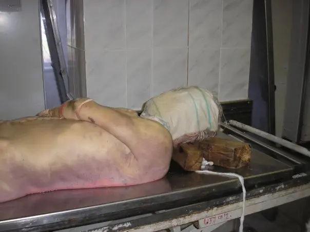

LOT_013 — G13 — Décès non naturel | unnatural death — Phase A : monographie du SSP et dix scénarios gradués
Ce SSP est transversal : il porte sur une décision médico-légale, pas sur une maladie. Le point 3 décrit la thanatologie, utile au constat, et ne prescrit aucune pharmacologie. Les dix scénarios diagnostiques (DX) sont des scénarios de décès, gradués selon leur gravité médico-légale. La mort subite d'apparence naturelle relève du SSP voisin G14 « unexpected or sudden death » S22 ; ce lot traite la qualification de la mort et ses scénarios non naturels.
1. Définition
Le décès non naturel est un décès qu'un événement extérieur au corps a causé, directement ou à distance. Cet événement est un accident, un suicide, assisté compris, l'acte d'un tiers, une intoxication ou une erreur de diagnostic ou de traitement. Cette définition suit le consensus « Legalinspektion » de la Société suisse de médecine légale (SGRM/SSML, 2009) et le mémento de l'Institut de médecine légale de l'Université de Zurich (IRM-UZH, 2026) S15S9.
Le décès non naturel et le décès de nature indéterminée forment ensemble le décès extraordinaire, que le médecin annonce sans délai à la police ou au ministère public (MP) S9S15.
La manière de la mort (naturelle, non naturelle, indéterminée) se distingue de la cause de la mort et de la circonstance. Un décès « naturel » exige une maladie qui l'explique, pas seulement l'absence de lésion visible S9S15.
2. Épidémiologie (Suisse, puis Europe)
En 2024, l'Office fédéral de la statistique (OFS) a enregistré 71 942 décès, dont 4 300 dans le groupe « accidents et traumatismes » S10. Ce groupe compte 3 116 accidents, 996 suicides non assistés et un solde de 188 autres décès externes (calcul dérivé) S10. L'OFS recense à part 1 774 suicides assistés, que l'Académie suisse des sciences médicales (ASSM) impose de déclarer comme non naturels S10S14. Le total des décès non naturels atteint ainsi au moins 6 074, soit 8,4 % des décès (calcul dérivé, plancher) S10. Ce chiffre reste un minimum : le groupe couvre les codes V00–Y98 de la CIM-10S10. Les décès liés à la drogue, codés F11–F19, n'y entrent pasS10S13.
| Scénario | Nombre | Année | Source |
|---|---|---|---|
| Suicide assisté | 1 774 (femmes 1 071 ; hommes 703) | 2024 | OFS [S10] |
| Chute mortelle (accidents non professionnels) | ≈ 1 700 par an | moyenne publiée en 2024 | Bureau de prévention des accidents (BPA) [S11] |
| Suicide non assisté | 996 (hommes 719 ; femmes 277) | 2024 | OFS [S10] |
| Accident de la route | 221 (statistique des causes de décès) ; 250 tués (BPA) | 2024 | [S10][S11] |
| Décès liés à la drogue | 188 (141 hommes, 47 femmes) | 2024 | Office fédéral de la santé publique (OFSP) et Observatoire suisse de la santé (Obsan), indicateur MonAM [S13] |
| Accident de sport (montagne, neige, eau) | 185 par an (montagne 84, neige 38, eau 31) | moyenne 2000–2023 | BPA [S11] |
| Accident professionnel | < 80 par an depuis 2011 | 2011–2025 | Service de centralisation des statistiques de l'assurance-accidents (SSAA), Suva [S17] |
| Homicide consommé | 55 (61,8 % dans la sphère domestique) ; moyenne de 48 par an sur 16 ans | 2025 | OFS [S12] |
| Nourrisson < 1 an : mort subite (R95) et cause inconnue (R96–R99) | 2 + 26 | 2024 | OFS [S10] |
| Activité médico-légale romande (Vaud et Genève), qui donne l'ordre de grandeur des décès extraordinaires | Le CURML a fait 626 levées de corps, 351 examens externes et 493 autopsies | 2018 | Centre universitaire romand de médecine légale (CURML) [S30] |
Les accidents frappent surtout les personnes âgées : 2 518 des 3 116 décès accidentels de 2024 concernent les 65 ans et plus, soit 80,8 % (calcul dérivé) S10. Les hommes représentent 72 % des suicides non assistés, et les armes à feu tuent 174 hommes contre 9 femmes par suicide en 2024 S10. Le détail par âge, sexe et méthode oriente la suspicion dès l'arrivée sur les lieux.
À l'échelle individuelle, le parcours d'un décès extraordinaire suit une séquence fixe : constat, annonce, examen médico-légal, puis levée du corps ou autopsie S1S15. Les enjeux sont la prévention, la découverte des homicides et la qualité des statistiquesS19. La Suisse vise −25 % de suicides non assistés pour 100 000 habitants d'ici 2030, par rapport à 2013S24.
En Europe, la recommandation de la Haute Autorité de santé (HAS, France, 2007) reste la référence pour la mort inattendue du nourrissonS19.
3. Physiopathologie (transposée : thanatologie utile au constat)
L'arrêt circulatoire amorce une cascade prévisible : le sang descend dans les capillaires déclives, où il forme les lividitésS15. L'épuisement de l'adénosine triphosphate (ATP) musculaire installe la rigidité, et le corps s'équilibre avec la température ambianteS15.
Ces phénomènes prouvent la mort, encadrent l'heure du décès et révèlent une cause externe quand leur couleur, leur siège ou leur chronologie contredisent le récit S9S15. La table de Henssge donne des fourchettes à 95 % ; les phénomènes tardifs (putréfaction, momification, adipocire) ne datent presque plus le décès S15.
Chez le défunt, aucun traitement ne s'applique : l'action protège les vivants et la preuve, et le tableau suivant relie chaque phénomène à sa conséquence médico-légale S9S15.
| Phénomène ou perturbation | Exploration qui le montre | Conséquence médico-légale (mécanisme) |
|---|---|---|
| Arrêt circulatoire irréversible | Au moins un signe sûr : lividités, rigidité, putréfaction, lésion incompatible avec la vie [S15] | Constat du décès autorisé ; sans signe sûr, pas de certificat [S9] |
| Hypostase de couleur anormale | Inspection des lividités, couleur notée [S15] | Rouge clair : CO ou froid → sécurité, annonce ; brune ou verte : toxique → annonce [S15] |
| Lividités discordantes avec la position | Comparaison position / siège des taches, marquage du niveau au crayon [S15] | Corps déplacé → mort indéterminée, annonce [S9] |
| Rigidité et refroidissement | Test articulaire, température rectale profonde (≥ 8 cm) et ambiante, heures notées [S15] | Fourchette horaire ; discordance avec le récit → mort indéterminée [S9] |
| Congestion veineuse cervicale (strangulation) | Pétéchies des paupières, des conjonctives, de la face, de la muqueuse buccale, de la peau rétro-auriculaire [S9] | Asphyxie mécanique → mort non naturelle, protection des traces [S9] |
| Traumatisme crânien | Palpation du crâne, hématome « en monocle » ou « en lunettes », sang aux orifices [S9] | Fracture du crâne présumée → non naturelle, même après une chute banale [S9] |
| Putréfaction avancée | Inspection : coloration verte, phlyctènes, gonflement [S15] | Examen et identité limités → annonce, identification médico-légale [S9][S15] |
| Hypothermie (vie réduite) | Température centrale avec thermomètre gradué bas, contrôle des signes vitaux jusqu'à 1 min [S20] | Signes de mort incertains → réanimer et réchauffer selon le Conseil européen de réanimation (ERC) 2025, ne pas certifier [S20][S9] |
L'arrêt circulatoire amorce le processus ; l'hypostase et la chute de l'ATP le développent en minutes à heures ; la fixation des lividités et la rigidité maximale l'installent. L'autolyse et la putréfaction le prolongent puis le résolvent S15.
4. Démarche diagnostique
Le médecin raisonne d'abord selon la gravité, puis selon la fréquence, ce qui protège la preuveS9. Il sécurise les lieux, prouve la mort, exclut les scénarios graves (E1 à E5, 🚩), puis départage les fréquentsS9S15. Toute hypothèse grave non exclue suffit à classer la mort comme indéterminée et à l'annoncer : « dans le doute, annoncer » S9.
Étape 0, avant tout diagnostic : le médecin cherche une source de danger (auteur présent, arme, courant électrique, gaz, CO), puis vérifie au moins un signe sûr de mort. En hypothermie ou en intoxication, il réanime au lieu de certifierS15S9S20. Cette mort apparente, état de vie réduite qui suit aussi l'électrisation, rend les signes de mort incertainsS9.
| Rang | Scénario | Signe ou examen qui tranche | Piège classique | Conduite immédiate si positif |
|---|---|---|---|---|
| 🚩 E1 | Homicide | Lésions incompatibles avec le récit, lésions de défense aux mains, traces de strangulation ou d'étouffement ; autopsie ordonnée par le MP [S9][S1] | Homicide maquillé en suicide, en accident ou en mort naturelle chez une personne âgée | Interrompre l'examen, ne rien déplacer, éloigner les tiers, appeler la police [S9] |
| 🚩 E2 | Décès inattendu du nourrisson ou de l'enfant | Examen complet du corps dévêtu : ecchymoses d'âges différents, morsures, brûlures, maigreur extrême ; autopsie [S19] | Conclure à une « mort subite du nourrisson » sur place, avant tout bilan [S19] | Annonce au MP, protection de la fratrie (avis à l'autorité de protection de l'enfant, APEA) [S3][S19] |
| 🚩 E3 | Intoxication (dont CO) | Lividités rouge clair, brunes ou vertes ; emballages, seringues ; toxicologie [S15][S9] | Ignorer un CO ambiant qui menace les proches et les secours | Évacuer, aérer, alerter ; annonce ; Vaud : signaler au médecin cantonal [S7] |
| 🚩 E4 | Décès en lien avec un acte médical | Lien temporel avec un acte, une consultation ou un traitement ; matériel laissé en place [S9][S18] | Certifier « naturel » une complication de son propre traitement | Laisser cathéters, sondes et drains ; mort indéterminée ; avis du légiste [S18] |
| 🚩 E5 | Décès de nature indéterminée | Absence de maladie connue expliquant la mort, découverte tardive, identité incertaine [S9] | Certifier « naturel » faute de lésion visible [S9] | Annoncer le décès extraordinaire ; examen médico-légal [S9][S1] |
Trois départages fréquents se règlent par un signe précis : le suicide assisté documenté, la chute ancienne et le suicide non assisté restent non naturels et s'annoncent comme tels S14S9S18.
5. Anamnèse ciblée et drapeaux rouges
Le médecin interroge chaque témoin séparément, note les discordances et ne suggère aucune réponseS9S19. Chaque question porte sur une exigence du certificat : mort sûre, identité sûre ou mort naturelle plausibleS9.
| Question | Pourquoi elle change la décision | Source |
|---|---|---|
| Qui a trouvé le corps, quand, dans quelle position, qu'a-t-on déplacé ? | Une position modifiée rend les lividités discordantes et la mort indéterminée | [S9][S15] |
| À quelle heure quelqu'un a-t-il vu la personne vivante pour la dernière fois ? | La fourchette horaire doit concorder avec les lividités, la rigidité et la température | [S9][S15] |
| Quelle maladie connue explique ce décès, maintenant ? | Sans maladie plausible, la mort est en règle indéterminée | [S9] |
| Y a-t-il eu une chute, un accident, une hospitalisation ou un acte médical récent ou ancien ? | Une séquelle tardive d'un événement extérieur rend la mort non naturelle ; un acte médical récent rend la mort indéterminée (Vaud) | [S9][S15][S18] |
| Quels médicaments, drogues, alcool, produits ménagers sont accessibles ? | Une intoxication est une mort non naturelle ; une intoxication chimique se signale au médecin cantonal (Vaud) | [S9][S7] |
| Y avait-il des idées suicidaires, une lettre, une demande auprès d'une organisation d'assistance au suicide ? | La réponse oriente vers le suicide ou le suicide assisté, tous deux non naturels | [S14][S18] |
| Y a-t-il eu des disputes, des menaces, des violences antérieures, une séparation ? | Dans les homicides au sein du couple (2019–2023), 40 % des prévenus masculins avaient déjà commis des violences physiques | [S12] |
| Des enfants vivent-ils au domicile ? | Leur intégrité peut être menacée ; le médecin peut aviser l'APEA | [S3] |
| Quel chauffage, quel appareil à combustion fonctionne ? | Le CO menace les vivants et le médecin | [S15][S16] |
| Quelle identité, prouvée comment ? | Une photo de pièce d'identité seule ne suffit pas en cas de doute ; une identité incertaine impose l'annonce | [S9] |
| La personne travaillait-elle au moment de l'accident ? | En cas d'accident professionnel, le médecin informe l'assureur-accidents (Suva ou autre assureur selon la loi sur l'assurance-accidents, LAA) | [S17] |
Chaque drapeau rouge impose une action immédiate, pas une simple mention dans le dossier S9S15.
6. Examen physique ciblé, région par région
Le médecin examine personnellement le corps entièrement dévêtu, face et dos, cuir chevelu, plis et orifices compris. Il ne délègue cet examen ni aux soignants, ni aux ambulanciers, ni aux pompes funèbres S9. Il décrit d'abord le normal attendu, puis toute anomalie, en mesures métriques et sans termes vagues comme « normal » ou « sans particularité » S15.
Il teste les lividités par une pression brève du pouce, éprouve la rigidité à plusieurs articulations et mesure la température rectale profonde avec un thermomètre étalonné S15.
Il examine ensuite le corps de la tête aux piedsS9S15. L'ordre suit la tête et le cuir chevelu, les yeux et la face, puis le nez, la bouche et les oreilles et le cou. Il continue par le thorax, l'abdomen et le dos, la région génitale et anale, les membres, puis les mains et les ongles.
La valeur de ces signes repose sur leur concordance avec la découverte et l'anamnèseS9S15.
7. Approche syndromique
Six syndromes organisent l'examen. Le médecin relève les signes de contexte, rapportés ou observés sur les lieux, puis cherche les signes physiques sur le corps S9S15.
7.1 Syndrome asphyxique mécanique
Le contexte montre un corps suspendu, un lien, un coussin ou un sac près du visage, parfois une lettre d'adieu. Le corps porte des pétéchies de congestion, un sillon ou des marques au cou, des griffures et des lésions discrètes autour du nez et de la bouche S9.
7.2 Syndrome traumatique
Le contexte comprend une chute, une collision, une arme, une bagarre ou un escalier. Le corps porte des hématomes, des plaies, des crépitations, des instabilités, des lésions de défense ou du sang aux orifices S9.
7.3 Syndrome toxique
Le contexte montre des emballages de médicaments, des seringues, de la poudre, un appareil à combustion ou plusieurs personnes malades. Le corps porte des lividités colorées, des points d'injection, des résidus nasaux ou de la mousse S9S15.
7.4 Syndrome environnemental (froid, eau, courant)
Le contexte montre de la neige, de l'eau, une avalanche, un appareil électrique ou une source de courant. Le corps porte des lividités rouge clair au froid, de la mousse aux orifices ou des signes de mort incertains en hypothermie S15S9S20.
7.5 Syndrome de négligence ou de maltraitance
Le récit ne correspond pas à l'âge ou au développement de l'enfant, les versions divergent, l'appel arrive tard, ou la fratrie a des antécédents. Le corps porte des ecchymoses d'âges différents, des morsures, des brûlures, une maigreur extrême ou une déshydratation S19.
7.6 Syndrome de l'acte médical
Le contexte rapporte une intervention, une injection, une consultation ou un changement de traitement récent. Le corps porte des accès vasculaires, des drains, des sondes, des cicatrices récentes ou des traces de réanimation S9S18.
8. Diagnostic positif et critères
Le diagnostic repose sur les critères de la SGRM/SSML (2009), précisés par l'IRM-UZH (2026) : un signe sûr de mort, une identité sûre, puis une décision de manière parmi trois S15S9. Sur le plan légal, la mort est l'arrêt irréversible des fonctions du cerveau, tronc cérébral compris (LTx art. 9 al. 1) ; ce critère ne dit rien de la manière de mourirS4. Une seule condition de la mort naturelle manquante suffit à classer la mort comme indéterminée ; un seul indice d'action extérieure suffit à la classer comme non naturelle S9S15.
Ne suffisent pas : l'absence de lésion visible, l'âge avancé, une photo de pièce d'identité en cas de doute, ou une « cause cardiaque probable » sans maladie connue S9. Les formulaires cantonaux traduisent ces catégories en cases à cocher et en obligations d'annonce S18S8.
Le certificat engage la responsabilité du médecin : un certificat contraire à la vérité est punissable, et le médecin se récuse s'il est proche du défunt S2S6.
9. Examens complémentaires
L'examen externe complet sur les lieux reste l'examen de première intention ; l'autopsie médico-légale ordonnée par le MP est l'examen de référence pour la cause et la manière de la mort S15S1. La SGRM rappelle que l'examen externe livre le plus souvent une simple suspicionS15.
9.a Gold standard : autopsie médico-légale
Le premier examen révèle parfois un indice d'infraction, ou l'identité reste inconnueS1. Le MP ordonne alors la mise en sûreté du corps, des examens à l'institut de médecine légale et, au besoin, une autopsie (CPP art. 253 al. 3)S1.
9.b Première intention : examen externe complet (constat, puis examen médico-légal)
Le médecin qui constate examine le corps entièrement dévêtu, mesure la température et documente la découverte. Le médecin légiste mandaté par le MP réalise ensuite l'examen médico-légal sur les lieux S9S15S1.
9.c Alternatives : imagerie post mortem
À l'IRM-UZH, une tomodensitométrie post mortem (CT) de triage est faite chez tous les défunts en enquête médico-légaleS25. Le MP décide ensuite ; le corps est libéré sans autopsie si toutes les questions trouvent réponseS25.
9.d Deuxième intention : toxicologie, identification, autres analyses
Selon le cas, le légiste fait prélever du sang périphérique, de l'urine, du liquide céphalo-rachidien ou du liquide intraoculaire pour la toxicologie ou la génétiqueS15. L'identification mobilise au besoin l'anthropologie, l'acide désoxyribonucléique (ADN) ou la dactyloscopieS15.
| Résultat | Signification | Conduite |
|---|---|---|
| Signes sûrs présents, identité sûre, maladie plausible, examen et lieux concordants | Mort naturelle (examen positif pour la naturalité) | Certificat ; annonce à l'état civil [S9][S6] |
| Signe d'action extérieure (lésion, lien, toxique, séquelle) | Mort non naturelle | Annonce à la police ou au MP ; pas de manipulation [S9] |
| Examen limité ou résultats limites (putréfaction, anamnèse lacunaire) | Mort indéterminée | Annonce ; Vaud : avis du CURML [S9][S18] |
| Discordance entre récit et signes (heure, position, lésions) | Indice de mise en scène ou de déplacement | Mort indéterminée ; noter la discordance ; annonce [S9][S15] |
| Premier examen médico-légal sans indice d'infraction, identité connue | Pas de soupçon pénal | Le MP autorise la levée du corps [S1] |
| Indice d'infraction ou identité inconnue | Soupçon persistant | Mise en sûreté, examens à l'institut, autopsie au besoin [S1] |
10. Arbre décisionnel
L'arbre commence par la sécurité et la réalité de la mort, exclut ensuite les scénarios graves, puis classe la mort. Chaque nœud renvoie à un signe, un examen ou une action S9S15S1.
- Si un danger est présent (auteur, arme, gaz, CO, courant) → se retirer, alerter les secours ; examiner seulement après sécurisation S15.
- Si aucun signe sûr de mort n'est présent (lividités, rigidité, putréfaction, lésion incompatible avec la vie) → réanimer ; en hypothermie, appliquer l'ERC 2025 ; ne pas certifier S9S20.
- Si l'identité n'est pas sûre → le médecin doit renoncer à certifier une mort naturelle et annonce le décès à la policeS9S18S6.
- Si une lésion inexpliquée, une trace de strangulation, une arme ou un récit incohérent apparaît → interrompre l'examen, protéger les lieux, annoncer (🚩 E1) S9.
- Si un nourrisson ou un enfant meurt de façon inattendue, sans maladie connue qui l'explique → examen complet du corps dévêtu, annonce. Le MP décide de l'autopsie, que la HAS recommande pour chaque mort inattendue du nourrisson ; protection de la fratrie (🚩 E2) S19S1S3.
- Si les lividités sont rouge clair, brunes ou vertes, ou si des toxiques sont visibles → sécuriser, annoncer ; Vaud : médecin cantonal (🚩 E3) S15S7.
- Si un acte médical récent peut être en cause → matériel en place, mort indéterminée, avis du légiste (🚩 E4) S18S9.
- Si aucune maladie connue n'explique le décès, ou si la découverte est tardive ou insolite → mort indéterminée, annonce (🚩 E5) S9.
- Si une cause extérieure est établie sans indice de tiers (suicide assisté documenté, chute, suicide, accident) → mort non naturelle ; annonce ; le MP décide de la levée S14S18S1.
- Si toutes les conditions de la mort naturelle sont remplies → certificat ; annonce à l'état civil dans les deux jours S9S6.
11. Prise en charge selon les recommandations suisses
11.A But
La prise en charge vise quatre résultats mesurables : protéger les vivants dans les premières minutes, établir la mort et l'identité, annoncer sans délai le décès extraordinaire et fournir un certificat exactS15S9. Ce certificat accompagne l'annonce à l'état civil dans les deux jours, ou dix jours pour un corps inconnu (OEC art. 34a, 35 al. 1 et 5)S6. En mort non naturelle, Vaud subordonne l'attestation de l'état civil à l'avis écrit du MP, et Genève remplace le certificat par un simple constat S7S8. Elle préserve aussi la preuve et soutient les proches S9S19.
11.B Moyens
L'ordre ne varie pas : sécurité, constat, protection des traces, annonce, information des proches, puis documents ; la conduite chronologique fixe chaque minute S15S9S18.
La pharmacologie est sans objet chez le défunt ; cette Phase A n'affirme aucune dose S23.
Les mesures non médicamenteuses portent sur les proches, l'équipe et les démarches sociales et d'assurance S19S14S5.
Les situations spéciales modifient l'annonce : enfant, personne âgée en institution, détenu, personne inconnue, suicide assisté, don d'organes S19S6S9S26.
11.C Surveillance
Le médecin suit la transmission du dossier aux autorités, la cohérence entre le certificat et les conclusions du légiste, et l'état des proches à risque. La HAS signale le risque de geste désespéré chez les parents S9S18S19. Le seuil d'alerte est simple : toute information nouvelle qui contredit la mort naturelle impose une nouvelle annonce S9.
11.D Pronostic, critères de libération du corps et recherche 2026
Le corps est libéré quand deux conditions sont réunies : aucun indice d'infraction après le premier examen et identité connue (CPP art. 253 al. 2) S1. La recherche suisse avance sur la CT post mortem de triage et sur la statistique des féminicides, dont l'OFS étudie la faisabilité S25S12.
12. Prévention
La prévention primaire vise les causes fréquentes : chutes, suicide, route et drogue. Elle s'appuie sur le BPA et sur le plan d'action national de prévention du suicide de l'OFSP (Office fédéral de la santé publique, 2016) S11S24.
| Niveau | Mesure | Population cible et seuil | Organisme, année |
|---|---|---|---|
| Primaire | Entraînement de la force, de l'équilibre et de la forme mentale ; suppression des obstacles, surtout dans les escaliers | Seniors : plus de 50 % s'entraînent aujourd'hui, contre 39 % en 2018 | BPA, 2024 [S11] |
| Primaire | Restreindre l'accès aux moyens létaux ; prévention spécifique aux voies ferrées | Population générale ; armes à feu : 18,4 % des suicides en 2024 | OFSP, plan 2016 [S24] ; OFS [S10] |
| Primaire | Aide facilement accessible : 143 (La Main Tendue, adultes), 147 (Pro Juventute, enfants et jeunes), 24 h sur 24 | Personnes en crise | OFSP [S24] |
| Primaire | Politique de sécurité routière ; objectif de l'Office fédéral des routes : 100 tués au plus en 2030 | Usagers de la route ; 250 tués en 2024 | BPA, 2025 [S11] |
| Primaire et secondaire | Suivre l'indicateur des décès liés à la drogue pour orienter la politique en matière de drogue ; l'OFSP estime qu'un cadre approprié pourrait prévenir des décès précoces | Personnes consommant des drogues, surtout de l'héroïne ; 188 décès en 2024, en hausse depuis le minimum de 121 en 2012 | OFSP et Obsan, MonAM 2025 [S13] |
| Secondaire | Repérage précoce de la suicidalité (objectif 4 du plan) | Patients à risque | OFSP [S24] |
| Secondaire | Avis à l'APEA quand l'intégrité d'un enfant semble menacée | Fratrie d'un enfant décédé, enfants exposés à la violence domestique | CC art. 314c–314d [S3] |
| Secondaire | Collaboration de l'autorité de protection de l'adulte, des services et de la police en cas de danger réel | Adulte vulnérable menacé | CC art. 453 [S3] |
| Tertiaire | Soutien des personnes endeuillées et des professionnels touchés (objectif 7) | Proches après un suicide | OFSP [S24] |
| Tertiaire | Comités de revue des décès d'enfants ; données de mortalité fiables | Décès d'enfants | HAS, 2007 (Europe) [S19] |
13. Points clés
- Le médecin sécurise d'abord les lieux, puis prouve la mort par au moins un signe sûr ; sans signe sûr, il réanime.
- Un décès naturel exige une maladie connue qui l'explique ; l'absence de lésion visible ne suffit jamais.
- Une chute, un accident ou un acte médical, même survenus des semaines avant, rendent la mort non naturelle ou indéterminée.
- Le suicide assisté est déclaré comme décès non naturel et passe par l'examen médico-légal.
- Au premier indice d'action extérieure, le médecin doit interrompre l'examen, ne rien déplacer et annoncer le décès à la police ou au ministère public.
- Dans le doute, le médecin classe la mort comme indéterminée et il l'annonce.
Ces points clés reposent sur les sourcesS9S15S14S18S20.
14. Pièges et questions fréquentes à l'examen fédéral suisse
| Question d'examen | Bonne réponse | Raison courte |
|---|---|---|
| Une femme de 88 ans meurt en EMS 3 semaines après une fracture du col du fémur. Quelle manière de mort ? | Non naturelle ; annonce à la police | Les suites d'un accident, même éloignées, restent non naturelles [S18][S9] |
| Un patient meurt après un suicide assisté par une organisation. Certificat « naturel » ? | Non : décès non naturel, déclaré comme tel | L'ASSM (2018, révision 2021) l'exige [S14] |
| L'aide au suicide est-elle punissable en Suisse ? | Seulement si l'auteur agit par mobile égoïste | Le CP art. 115 le prévoit [S2] |
| Un homme âgé est trouvé mort chez lui, sans lésion visible, sans antécédent connu. Certificat naturel ? | Non : mort indéterminée, annonce | Aucune maladie n'explique le décès [S9] |
| Quels sont les signes sûrs de mort ? | Les lividités, la rigidité, la putréfaction et les lésions incompatibles avec la vie | L'absence de pouls, l'apnée et les pupilles fixes restent des signes incertains [S15][S9] |
| Que signifient des lividités rouge clair ? | CO, cyanure ou froid : danger possible, annonce | La SGRM (2009) relie cette couleur au CO, au cyanure et au froid [S15] |
| Le médecin peut-il ordonner l'autopsie médico-légale ? | Non : il annonce, le MP ordonne | Le CPP art. 253 al. 3 réserve l'ordre d'autopsie au MP [S1] |
| Le secret professionnel interdit-il l'annonce d'un décès extraordinaire ? | Non : les obligations légales d'aviser sont réservées | Le CP art. 321 ch. 3 et le CPP art. 253 al. 4 réservent ces obligations [S2][S1] |
| Le médecin peut-il certifier le décès de sa belle-sœur ? | Non : il doit se récuser | L'OEC art. 89 al. 3 l'impose [S6] |
| Quel est le délai d'annonce du décès à l'état civil ? | Deux jours ; dix jours pour un corps inconnu | L'OEC art. 35 al. 1 fixe ces délais [S6] |
| Que faire des cathéters et sondes après un décès en lien possible avec un soin ? | Les laisser en place | Le matériel prouve l'acte [S18] |
| À Genève, que fait le médecin devant une mort violente sur la voie publique ? | Il refuse le certificat, établit un simple constat et avise les autorités | La LS art. 68 al. 2 le prévoit [S8] |
| Un randonneur hypotherme, sans pouls ni lividités : décès ? | Non : réanimation et réchauffement | Les signes de mort restent incertains ; l'ERC 2025 recommande la réanimation [S20][S9] |
| Faut-il donner l'heure exacte d'un décès non observé ? | Non : le médecin donne une fourchette ou laisse l'heure au légiste (Vaud) | Le texte demande une fourchette, jamais une heure fausse et précise [S9][S18] |
| Une femme âgée est trouvée morte au pied de son lit ; l'autopsie montre une hémorragie intracrânienne. La cause suffit-elle à fixer la manière ? | Non : maladie ou traumatisme restent possibles ; tant que l'origine reste inconnue, la mort est indéterminée et s'annonce ; un traumatisme établi la rend non naturelle | La cause, la manière et la circonstance forment trois questions distinctes [S15][S9] |
| Après un suicide, l'assurance-accidents verse-t-elle des prestations ? | Seulement l'indemnité pour frais funéraires si l'assuré a provoqué intentionnellement son décès | La LAA art. 37 al. 1 le prévoit [S28] |
| À Zurich, à qui le médecin annonce-t-il un décès extraordinaire, et le secret l'en empêche-t-il ? | À la police, sans délai ; le secret ne l'en empêche pas | Le § 15 al. 3 let. a GesG le prévoit [S27] |
Bloc 2 — Dix scénarios gradués (DX.1 → DX.10)
Critère d'ordre : les dix scénarios suivent la fréquence décroissante des décès en Suisse, d'après les données les plus récentes de l'OFS, du BPA et de l'OFSP–Obsan. Les deux scénarios sans chiffre suisse ferment la liste, sans que ce rang préjuge d'une fréquence faible S10S11S13. Deux paires restent quasi ex aequo : DX.1 et DX.2 (1 774 contre environ 1 700, écart de 4,2 %), puis DX.5 et DX.6 (188 contre 185, écart de 1,6 %)S10S11S13. Les sources et les années diffèrent, et DX.5 compte seulement la drogue (calcul dérivé) S10S11S13. La gravité médico-légale reste visible : cinq scénarios portent le badge 🚩 et un rang d'exclusion, et l'algorithme les exclut en premier. Ce sont E1 Homicide (DX.7), E2 Décès inattendu du nourrisson ou de l'enfant (DX.8) et E3 Intoxication mortelle (DX.5). Viennent ensuite E4 Décès en lien avec un acte médical (DX.9) et E5 Décès de nature indéterminée (DX.10).
| DX | Scénario (nom exact) | Fréquence en Suisse | À exclure en priorité | Pourquoi ce scénario, pourquoi ce rang |
|---|---|---|---|---|
| DX.1 | DX.1 — Suicide assisté | 1 774 décès en 2024 [S10] | — | Il ouvre la liste chiffrée ; l'ASSM et le guide vaudois le déclarent non naturel ; l'art. 115 CP en fixe l'enjeu pénal [S14][S18][S2] |
| DX.2 | DX.2 — Chute accidentelle de la personne âgée | ≈ 1 700 décès par an [S11] | — | Il pèse le plus parmi les accidents mortels non professionnels ; le décès différé reste non naturel [S11][S9] |
| DX.3 | DX.3 — Suicide non assisté | 996 décès en 2024 [S10] | — | Ses méthodes et son profil sont connus ; il forme le principal diagnostic différentiel de l'homicide maquillé [S10][S9] |
| DX.4 | DX.4 — Accident de la circulation routière | 221 décès en 2024 (OFS) ; 250 tués (BPA) [S10][S11] | — | Le contexte paraît évident, mais le médecin exclut une mort naturelle au volant ou une intoxication associée ; l'assurance et le droit pénal sont en jeu [S10][S5] |
| DX.5 | DX.5 — Intoxication mortelle (drogues, médicaments, monoxyde de carbone) | 188 décès liés à la drogue en 2024 [S13] | 🚩 E3 | Le CO menace immédiatement les vivants ; Vaud exige le signalement au médecin cantonal ; le chiffre sous-estime les médicaments et le CO [S15][S7][S16] |
| DX.6 | DX.6 — Accident de montagne, de sport ou noyade | 185 décès par an [S11] | — | La montagne tue 84 personnes, la neige 38 et l'eau 31 ; l'hypothermie crée une mort apparente que le médecin ne certifie pas [S11][S20] |
| DX.7 | DX.7 — Homicide | 55 homicides consommés en 2025 [S12] | 🚩 E1 | Il est rare mais le plus grave ; 61,8 % surviennent dans la sphère domestique ; il peut se cacher derrière chaque autre scénario [S12][S9] |
| DX.8 | DX.8 — Décès inattendu du nourrisson ou de l'enfant | 28 nourrissons en 2024 : R95 2 + R96–R99 26 [S10] | 🚩 E2 | Le médecin exclut une maltraitance et protège la fratrie ; la HAS recommande l'autopsie pour chaque cas [S19][S3] |
| DX.9 | DX.9 — Décès en lien avec un acte médical | 9e rang [S9] | 🚩 E4 | La SGRM et l'IRM-UZH l'incluent dans la mort non naturelle ; le médecin traitant risque un conflit d'intérêts ; le médecin conserve la preuve matérielle [S15][S9][S18] |
| DX.10 | DX.10 — Décès de nature indéterminée | 10e rang [S9] | 🚩 E5 | Le médecin annonce cette catégorie « unklar » ; elle protège contre l'homicide méconnu [S9][S15] |
Justification de chaque scénario
DX.1 — Suicide assisté
Le suicide assisté ouvre la liste chiffrée parce que l'ASSM impose de déclarer le décès comme non naturel et que le guide vaudois le range dans la mort non naturelle S14S18. Le médecin vérifie les conditions de l'ASSM et le geste final du patient.
DX.2 — Chute accidentelle de la personne âgée
La chute est la première cause d'accident mortel non professionnel ; dans l'habitat et les loisirs, l'âge moyen des victimes atteint 82 ansS11. Elle entre dans la liste à cause du décès différé, souvent certifié à tort comme naturel S9S18.
DX.3 — Suicide non assisté
Chez l'homme, la pendaison et les armes à feu dominent les suicides non assistésS10. Il entre dans la liste comme scénario fréquent et comme diagnostic différentiel de l'homicide maquillé S9.
DX.4 — Accident de la circulation routière
Le scénario reste distinct parce que la mort survient hors domicile, sur la voie publique, ce qui impose à Genève le simple constat S8.
DX.5 — Intoxication mortelle (drogues, médicaments, monoxyde de carbone)
Le chiffre des décès liés à la drogue ne compte ni les médicaments, ni les produits chimiques, ni le COS13S16. Elle porte le rang 🚩 E3, car un toxique ambiant menace encore les vivants S15.
DX.6 — Accident de montagne, de sport ou noyade
Le scénario entre dans la liste à cause du piège de l'hypothermie, où les signes de mort sont incertains et où la réanimation prime S20S9.
DX.7 — Homicide
L'homicide reste rare, mais il porte le rang 🚩 E1 parce qu'une erreur détruit la preuve et laisse un auteur libre ; la violence antérieure est un facteur de risque documenté S12S9.
DX.8 — Décès inattendu du nourrisson ou de l'enfant
Le scénario porte le rang 🚩 E2, car la HAS demande de distinguer mort subite inexpliquée, cause médicale ou accidentelle et maltraitance, et parce que la fratrie peut être en danger S19S3.
DX.9 — Décès en lien avec un acte médical
La SGRM range l'erreur de traitement dans les délits, et l'IRM-UZH classe le décès après traitement ou consultation en mort indéterminée S15S9. Le scénario porte le rang 🚩 E4 : le médecin peut être juge et partie, et le matériel en place constitue la preuve S6S18.
DX.10 — Décès de nature indéterminée
Ce scénario regroupe les décès sans maladie explicative, les corps découverts tardivement ou putréfiés et les identités incertaines S9. Il porte le rang 🚩 E5, car il protège contre l'homicide méconnu S9S15.
Le nom vise la manière de la mort, pas sa causeS18. Il reprend la « mort d'origine indéterminée » de l'attestation vaudoise et la catégorie « unklar » de l'IRM-UZHS18S9.
Scénarios examinés et non retenus comme DX séparés
L'accident professionnel reste rare, avec moins de 80 décès par an depuis 2011 ; ses enjeux d'assurance-accidents sont traités dans DX.2, DX.4 et DX.6 S17. La mort subite d'apparence naturelle appartient au SSP G14 S22.
Tableau comparatif des dix scénarios
| DX | Signe clé | Examen qui tranche | Mécanisme | Conduite immédiate | Rang d'exclusion |
|---|---|---|---|---|---|
| DX.1 Suicide assisté | Organisation présente, dossier de capacité de discernement | Examen médico-légal ; vérification de l'art. 115 CP [S26][S2] | Geste final accompli par le patient lui-même [S14] | Déclarer non naturel ; annonce [S14] | — |
| DX.2 Chute de la personne âgée | Traumatisme récent ou ancien, fracture, immobilisation | Examen externe, palpation du crâne ; autopsie selon le MP [S9] | Traumatisme direct ou complication d'immobilisation [S9] | Non naturelle ; annonce [S18] | — |
| DX.3 Suicide non assisté | Méthode visible, lettre | Examen médico-légal, autopsie au besoin [S15] | Asphyxie, plaie par arme, toxique [S10] | Protéger les traces ; annonce [S9] | — |
| DX.4 Accident de la route | Lésions de haute énergie, voie publique | Examen médico-légal ; prélèvements selon le MP [S15] | Traumatisme à haute énergie | Genève : simple constat ; annonce [S8] | — |
| DX.5 Intoxication | Lividités colorées, toxiques visibles | Toxicologie (sang, urine, liquide intraoculaire) [S15] | CO, cyanure, opioïdes, médicaments [S15][S13] | Sécuriser, aérer ; annonce ; médecin cantonal (Vaud) [S7] | 🚩 E3 |
| DX.6 Montagne, sport, noyade | Froid, eau, neige | Température centrale au thermomètre gradué bas [S20] | Hypothermie, asphyxie, traumatisme | Réanimer si signes de mort incertains [S20] | — |
| DX.7 Homicide | Lésions de défense, strangulation, récit incohérent | Autopsie médico-légale [S1] | Action d'un tiers | Interrompre, protéger, police [S9] | 🚩 E1 |
| DX.8 Nourrisson ou enfant | Ecchymoses d'âges différents, récit incompatible | Autopsie, imagerie, fond d'œil [S19] | Maladie, accident, asphyxie ou maltraitance [S19] | Annonce ; protection de la fratrie [S3] | 🚩 E2 |
| DX.9 Acte médical | Lien temporel avec un soin | Avis du légiste ; autopsie selon le MP [S18][S1] | Complication ou erreur de diagnostic ou de traitement [S9] | Matériel en place ; indéterminée [S18] | 🚩 E4 |
| DX.10 Nature indéterminée | Aucune maladie explicative, découverte tardive | Examen médico-légal, CT de triage, autopsie [S1][S25] | Inconnu à ce stade | Annonce [S9] | 🚩 E5 |
Algorithme discriminant (graves d'abord)
- Étape 0 — Sécurité et réalité de la mort : si un danger est présent, le médecin se retire ; s'il ne trouve aucun signe sûr, il réanime. En hypothermie, il applique l'ERC 2025 S15S9S20.
- 🚩 E1 Homicide (DX.7) : le médecin voit parfois une lésion inexpliquée, une lésion de défense, une strangulation, une arme ou une discordanceS9. Il interrompt alors l'examen, protège les lieux et appelle la policeS9.
- 🚩 E2 Enfant (DX.8) : si un nourrisson ou un enfant meurt de façon inattendue, le médecin l'examine complètement et annonce ; le MP décide de l'autopsie. Le médecin avise l'APEA si la fratrie semble menacée S19S1S3.
- 🚩 E3 Intoxication (DX.5) : si les lividités sont rouge clair, brunes ou vertes, si des toxiques sont visibles ou si plusieurs personnes sont malades, le médecin sécurise les lieux et annonce. À Vaud, il signale au médecin cantonal S15S7.
- 🚩 E4 Acte médical (DX.9) : si un soin récent peut être en cause, le médecin laisse le matériel en place, classe la mort comme indéterminée et demande l'avis du légiste S18.
- 🚩 E5 Nature indéterminée (DX.10) : si aucune maladie n'explique le décès, si l'identité reste incertaine, si le corps est putréfié ou si la personne était détenue, le médecin annonce S9.
- Si une organisation d'assistance au suicide est présente, le scénario est DX.1 et le médecin déclare le décès non naturel S14.
- Si une chute ou un accident, même ancien, touche une personne âgée, le scénario est DX.2 et la mort est non naturelle S18.
- Si une méthode suicidaire est visible sans indice de tiers, le scénario est DX.3 et le médecin annonce S9.
- Si le décès survient sur la voie publique ou dans un véhicule, le scénario est DX.4 ; en montagne, dans la neige ou dans l'eau, il est DX.6. Dans les deux cas, le médecin doit annoncer le décèsS8S9.
- Si toutes les conditions de la mort naturelle sont réunies, le médecin établit le certificat ; sinon il revient à E5 S9.
Sources
Toutes les sources ont été consultées le 30.10.2026 ; les extraits datés se trouvent dans evidence/ (index : evidence/INDEX.md).
- [S1] Code de procédure pénale suisse (CPP), RS 312.0, art. 253–254. Confédération suisse, Fedlex, état au 01.04.2025. https://www.fedlex.admin.ch/eli/cc/2010/267/fr.
- [S2] Code pénal suisse (CP), RS 311.0, art. 111, 112, 114, 115, 116, 117, 128, 318, 321. Confédération suisse, Fedlex, état au 01.10.2026. https://www.fedlex.admin.ch/eli/cc/54/757_781_799/fr.
- [S3] Code civil suisse (CC), RS 210, art. 314c, 314d, 453. Confédération suisse, Fedlex, état au 01.07.2026. https://www.fedlex.admin.ch/eli/cc/24/233_245_233/fr.
- [S4] Loi fédérale sur la transplantation d'organes, de tissus et de cellules (LTx), RS 810.21, art. 9. Fedlex, état au 01.02.2021. https://www.fedlex.admin.ch/eli/cc/2007/279/fr.
- [S5] Loi fédérale sur la partie générale du droit des assurances sociales (LPGA), RS 830.1, art. 4. Fedlex, état au 01.01.2024. https://www.fedlex.admin.ch/eli/cc/2002/510/fr.
- [S6] Ordonnance sur l'état civil (OEC), RS 211.112.2, art. 34a, 35, 89. Fedlex, état au 01.06.2025. https://www.fedlex.admin.ch/eli/cc/2004/362/fr.
- [S7] Règlement sur les décès, les sépultures et les pompes funèbres (RDSPF), BLV 818.41.1, art. 3–8. Canton de Vaud, 2012, version en vigueur dès le 01.01.2018 (LexFind). https://lexfind.ch/tolv/209709/fr.
- [S8] Loi sur la santé (LS), K 1 03, art. 68–70, et Règlement sur le sort du cadavre et la sépulture (RSép), K 1 55.08. République et canton de Genève, 2006 (modifications au 29.08.2026) et 2013. https://silgeneve.ch/legis/data/rsg_k1_03.htm ; https://silgeneve.ch/legis/data/rsg_k1_55p08.htm.
- [S9] Merkblatt Ärztliche Leichenschau, MB02-603, V01. Institut für Rechtsmedizin, Universität Zürich, 19.06.2026. https://www.irm.uzh.ch/dam/jcr:5f3d30a9-01f3-42c8-a083-4831df5b1168/MB02-603_Leichenschau_MBextern.pdf.
- [S10] Statistique des causes de décès, tableaux T 14.03.04.01.01, .02, .10, .12, .13, .14. Office fédéral de la statistique (OFS), état des données 22.12.2025. https://www.bfs.admin.ch/bfs/fr/home/statistiques/sante/etat-sante/mortalite-causes-deces.html (fichiers : https://dam-api.bfs.admin.ch/hub/api/dam/assets/36262354/master et suivants, voir evidence).
- [S11] Communiqués de presse : baromètre habitat et loisirs (10.09.2024) ; accidents de sport mortels (15.10.2024) ; programme 2026–2030 (03.06.2025) ; sécurité routière (04.11.2025). Bureau de prévention des accidents (BPA). https://bfu.ch/media/2t4dgujp/barometre-de-la-securite-dans-l-habitat-et-les-loisirs-plus-de-chutes-et-d-etouffements-mortels.pdf ; https://bfu.ch/media/cdzimevp/accidents-de-sport-mortels-185-décès-par-an-lors-dactivités-sportives.pdf ; https://www.bfu.ch/media/dlzpzgm1/plus-d-un-million-de-blessé-es-par-an-le-bpa-pose-les-jalons-d-une-baisse-des-accidents.pdf ; https://www.bfu.ch/media/52incp1g/trop-de-vies-perdues-sur-la-route-la-suisse-recule-dans-le-classement-européen.pdf.
- [S12] Homicides en Suisse 2019–2023 (n° 798-2300), 11.11.2025 ; communiqué sur la statistique policière de la criminalité 2025, 23.03.2026. Office fédéral de la statistique (OFS). https://dam-api.bfs.admin.ch/hub/api/dam/assets/36237917/master ; https://www.admin.ch/fr/newnsb/Lt4dQR54SMqZFh_vCX8oA.
- [S13] Drug-related deaths (indicateur MonAM). Office fédéral de la santé publique (OFSP) et Observatoire suisse de la santé (Obsan), mise à jour 22.12.2025. https://ind.obsan.admin.ch/en/indicator/monam/drug-related-deaths.
- [S14] Directives médico-éthiques « Attitude face à la fin de vie et à la mort » (2018 ; §6.2 et §6.2.1 révisés le 25.11.2021). Académie suisse des sciences médicales (ASSM). https://www.sams.ch/dam/jcr:3154cd58-a2bf-4d2a-b11c-27a46174bbe0/guidelines_sams_dying_and_death.pdf ; https://www.sams.ch/dam/jcr:c336fd1b-1751-40e1-a1b0-36a80cf487ed/directives_assm_fin_de_vie_et_mort_2018.pdf ; texte français du chapitre 6.2.1 adapté en 2021 (p. 25–27) : https://www.sams.ch/dam/jcr:3af2b70a-26df-4711-ba2d-40172c05f201/directives_assm_fin_de_vie_et_mort_chapitre_suicide_assiste.pdf.
- [S15] Legalinspektion, document de consensus. Société suisse de médecine légale (SGRM/SSML), section médecine forensique, 26.06.2009. https://sgrm.ch/inhalte/Forensische-Medizin/Durchfuehrung_Legalinspektion_01.pdf.
- [S16] Rapport annuel 2024. Tox Info Suisse, 2025. https://www.toxinfo.ch/customer/files/1206/Tox-Jahresbericht-2024-FR-Web-150dpi.pdf.
- [S17] Statistique des accidents LAA 2026 (réf. 2386-26.F). Service de centralisation des statistiques de l'assurance-accidents LAA (SSAA), Suva, 2026. https://www.suva.ch/fr-ch/download/document/statistique-laa-2026/statistique-laa-2026--2386-26.f.
- [S18] Guide pour la documentation de la nouvelle attestation de décès. Direction générale de la santé, canton de Vaud, 2021 (PDF daté de 2024). https://vd.ch/fileadmin/user_upload/themes/sante/Professionnels/Inhumations_et_pompes_fun%C3%A8bres/Guide_pour_la_documentation_de_la_nouvelle_attestation_de_d%C3%A9c%C3%A8s.pdf.
- [S19] Prise en charge en cas de mort inattendue du nourrisson (moins de 2 ans), recommandations professionnelles. Haute Autorité de santé (France), février 2007 — source européenne, faute de recommandation suisse trouvée. https://has-sante.fr/upload/docs/application/pdf/recommandations_mort_inattendue_nourrisson.pdf.
- [S20] European Resuscitation Council Guidelines 2025: Special Circumstances in Resuscitation. Resuscitation 2025;215 Suppl 1:110753 ; résumé du Resuscitation Council UK, 27.10.2025. https://www.resus.org.uk/print/pdf/node/36442.
- [S21] Loi fédérale sur les stupéfiants et les substances psychotropes (LStup), RS 812.121, art. 11. Fedlex, état au 01.09.2023. https://www.fedlex.admin.ch/eli/cc/1952/241_241_245/fr.
- [S22] PROFILES 2023 — Situations as Starting Points (SSP), catégorie G. Commission interfacultés médicale suisse (CIMS/SMIFK), 2023. https://www.smifk-cims.ch/profiles-2023/ssps.
- [S23] Corpus AIPS local AipsDownload_20261008.xml (Swissmedic/Refdata, généré le 08.10.2026) : le XML liste les spécialités sans leur principe actif ; les informations professionnelles vétérinaires liées aux n° 55815 (Esconarkon® ad us. vet., Streuli Tiergesundheit AG) et n° 62912 (Euthasol® 40 % ad us. vet., Dechra Veterinary Products Suisse GmbH) contiennent le pentobarbital. Dépôt du projet, .cache/aips/ ; https://files.refdata.ch/simis-public-prod/MedicinalDocuments/0444cff5da1a428ca904f9a62b319dc1-fr.html ; https://files.refdata.ch/simis-public-prod/MedicinalDocuments/b866a0860d0446288a0069f0d12f9a9d-fr.html.
- [S24] Plan d'action pour la prévention du suicide ; Prévention du suicide spécifique à la méthode utilisée. Office fédéral de la santé publique (OFSP), plan national 2016. https://www.bag.admin.ch/fr/plan-daction-pour-la-prevention-du-suicide.
- [S25] Thali M, Schweitzer W, Gascho D, Ebert L, Ampanozi G. Von der Kunst der Autopsie zur Virtopsy. VSAO/ASMAC Journal 2019;1:36–38. Institut für Rechtsmedizin, Universität Zürich. https://www.uzh.ch/cmsssl/irm/dam/jcr:1fa7bc79-1752-42df-8e0f-5a565bef95d2/190214%20VSAO%20Journal%20%201%2019_Seiten%2036_37_38.pdf.
- [S26] Réponse du Conseil-exécutif à la motion 294-2015 « Suicide assisté : simplifier la procédure de constatation du décès » (2015.RRGR.1127). Canton de Berne, 17.05.2016. https://ogd.parl.apps.be.ch/pdf-upload/e0b257e70e764474b5bfc01dc8d1d093-332.pdf.
- [S27] Gesundheitsgesetz (GesG), LS 810.1, § 15. Canton de Zurich, loi du 02.04.2007, version n° 131 en vigueur dès le 01.01.2026 (Zürcher Gesetzessammlung). https://www.zh.ch/de/politik-staat/gesetze-beschluesse/gesetzessammlung/zhlex-ls/erlass-810_1-2007_04_02-2008_07_01-131.html.
- [S28] Loi fédérale sur l'assurance-accidents (LAA), RS 832.20, art. 37. Fedlex, état au 01.01.2026. https://www.fedlex.admin.ch/eli/cc/1982/1676_1676_1676/fr.
- [S29] Directives médico-éthiques « Diagnostic de la mort en vue de la transplantation d'organes et préparation du prélèvement d'organes », §2.9. Académie suisse des sciences médicales (ASSM), 16.05.2017 (révision mise en consultation en 2025 ; aucune version adoptée trouvée le 30.10.2026). https://www.sams.ch/dam/jcr:de5c15a9-7551-4a52-a8c4-9128370a622a/directives_assm_diagnostic_de_la_mort.pdf.
- [S30] Présentation « CURML 2019 » : activités 2018. Centre universitaire romand de médecine légale (CURML), 2019. https://www.curml.ch/sites/default/files/fichiers/documents/curml_2019.pdf.
- [S31] Arrêt du Tribunal fédéral ATF 150 IV 255, consid. 3.4. Tribunal fédéral, Ire Cour de droit pénal, délibération publique du 13.03.2024. https://search.bger.ch/ext/eurospider/live/fr/php/clir/http/index.php?highlight_docid=atf%3A%2F%2F150-IV-255%3Afr&lang=fr&type=show_document.
Contenu établi à partir des sources citées ; non validé cliniquement par un médecin.
Tête et cuir chevelu
- Signe recherché : le médecin recherche une tuméfaction, une plaie, une crépitation ou une instabilité du crâneS9S15.
- Technique : il palpe puis percute le crâne ; le crâne normal reste stable et le cuir chevelu intactS9S15.
- Lecture et piège : une crépitation ou une instabilité signe une fracture du crâne, et les cheveux cachent souvent les plaiesS9S15.
Yeux et face
- Signe recherché : il recherche des pétéchies des paupières, des conjonctives, de la face, de la muqueuse buccale et de l'arrière des oreillesS9S15.
- Technique et normal : il retourne les paupières ; les conjonctives normales restent pâles et sans pétéchiesS9S15.
- Lecture : les pétéchies traduisent une congestion par strangulation, et l'hématome en monocle ou en lunettes évoque une fracture de la base du crâneS9S15.
Nez, bouche et oreilles
- Signe recherché : il recherche du sang, de la poudre ou une perforation de la cloison nasale, un corps étranger, des vomissements et de la mousseS9S15. Il recherche aussi une morsure de langue et des lésions du vestibule buccalS9.
- Normal : les orifices normaux restent videsS9S15.
- Lecture : ces signes orientent vers une drogue sniffée, une obstruction, une crise épileptique, un coup au visage ou un étouffementS9S15.
Cou
- Signe recherché : il recherche des marques de pression, de lien ou de doigts, des griffures et une congestion des veines jugulairesS9S15.
- Normal : la peau reste intacte et le rachis stableS9S15.
- Lecture et piège : ces marques évoquent une strangulation au lien ou manuelle ; les griffures peuvent venir de la victime elle-mêmeS9S15.
Thorax, abdomen et dos
- Signe recherché : il recherche une instabilité, une crépitation, des plaies, des accès vasculaires, des drains et un abdomen fluctuantS9S15.
- Normal : la paroi reste stable et ne porte que des cicatrices anciennesS9S15.
- Lecture et piège : ces signes évoquent des fractures ou une hémorragie interne ; le médecin signale les lésions de réanimation comme tellesS18.
Région génitale et anale
Mains et ongles
- Signe recherché : il recherche des lésions de défense, des ongles cassés, de la suie, de la poudre, des comprimés, du sang ou des tissus étrangersS9S15.
- Normal : les ongles restent intactsS9S15.
- Lecture et geste : ces traces signent une lutte ; le médecin protège les mains par des sacs en papierS15.
Définitions de référence (traduites de l'allemand, sources suisses)
| Manière | Définition | Source |
|---|---|---|
| Naturelle | Le décès résulte exclusivement d'une maladie, sans indice d'erreur de traitement. L'IRM-UZH exige en plus une anamnèse fiable, une maladie qui explique le décès au moment où il survient, une découverte banale, un examen du corps entièrement dévêtu et une identité sûre. | [S15] §2.1 ; [S9] §4.1 |
| Non naturelle | Un événement extérieur a causé le décès ou peut y être lié : accident, suicide (assisté compris), délit ou soupçon d'action d'un tiers, intoxication, erreur de diagnostic ou de traitement, séquelle tardive d'un événement extérieur. | [S9] §4.2 ; [S15] §3.2.5.1 |
| Indéterminée (« unklar ») | Une cause non naturelle reste possible, ou la mort naturelle ne peut pas être attestée avec une sécurité suffisante. | [S9] §4.3 ; [S15] §3.2.5.2 |
La SGRM définit le décès extraordinaire (« aussergewöhnlicher Todesfall ») : il comprend les décès non naturels, c'est-à-dire violents ou suspects de violenceS15. Il comprend aussi les décès subits et inattendus pour lesquels une violence reste possibleS15. Le consensus a été publié le 26.06.2009S15.
Piège : la SGRM range l'erreur de traitement dans les délits, donc dans la mort non naturelle S15. Un décès « naturel » exige donc aussi qu'aucun indice d'erreur médicale n'existe.
Décès extraordinaire : le terme selon les textes suisses
| Texte | Terme employé | Ce qu'il impose |
|---|---|---|
| Code de procédure pénale (CPP), art. 253 al. 1, état 01.04.2025 | « Mort suspecte » : indices d'une cause non naturelle, notamment d'une infraction, ou identité inconnue | Le MP ordonne un premier examen du cadavre par un médecin légiste [S1] |
| CPP art. 253 al. 4 | « Cas de morts suspectes » | Les cantons désignent le personnel médical tenu de les annoncer aux autorités pénales [S1] |
| Vaud, règlement sur les décès (RDSPF, base législative vaudoise BLV 818.41.1), art. 5 | « Mort inexpliquée ou violente » | Si la cause reste non établie, le médecin demande l'avis du Centre universitaire romand de médecine légale (CURML) avant le certificat ; si la mort est violente ou implique un tiers, il alerte la police ou le MP [S7] |
| Vaud, guide de l'attestation de décès (Direction générale de la santé) | « Mort non naturelle (anciennement violente) », « mort d'origine indéterminée », « naturelle » | Le médecin avise la police si la mort est non naturelle ; si elle est indéterminée, il suit l'avis du légiste de garde du CURML, qui prévaut [S18] |
| Genève, loi sur la santé (LS, K 1 03), art. 68 al. 2 | « Mort suspecte, violente ou sur la voie publique » | Le médecin refuse le certificat, délivre un simple constat et avise les autorités pour la levée de corps [S8] |
| Zurich, loi sur la santé (GesG, LS 810.1), § 15 al. 3 let. a, état au 01.01.2026 | « Aussergewöhnliche Todesfälle » | Malgré le secret professionnel, les professionnels de santé et leurs auxiliaires annoncent sans délai à la police les décès extraordinaires, notamment après accident, délit ou erreur de traitement, séquelles tardives comprises, et le suicide ; l'IRM-UZH ajoute le MP comme destinataire [S27][S9] |
Exemple : une femme de 84 ans meurt en établissement médico-social (EMS) trois semaines après une fracture du col du fémurS9S18. Le décès est non naturel, car il résulte d'un accident, même à distance S9S18. Le médecin coche « non naturelle » et avise la police (Vaud) S18.
Le § 15 GesG a été lu dans la version n° 131, en vigueur dès le 01.01.2026 ; son texte reste identique à celui de la version précédente S27. L'al. 4 let. b autorise en outre le médecin, sans levée du secret, à aider les enquêteurs à identifier un cadavreS27.
Cause, manière, circonstance : trois questions distinctes
| Notion | Question posée | Exemple |
|---|---|---|
| Cause de la mort (« Todesursache ») | Quelle lésion ou quelle maladie a tué ? | Hématome sous-dural |
| Manière de la mort (« Todesart » au sens large) | Naturelle, non naturelle ou indéterminée ? | Non naturelle |
| Circonstance (« Ereignisart », Todesart au sens étroit) | Accident, suicide, délit (erreur de traitement comprise) ou indéterminée ? | Accident (chute dans l'escalier) |
La SGRM recommande de formuler la cause avec retenue quand aucune autopsie n'a lieu (« constatations compatibles avec… »), car l'examen externe pose en général un simple diagnostic de suspicionS15.
Cadre déontologique et pénal du certificat de décès
- Code pénal (CP), art. 318 ch. 1 (état 01.10.2026) : le médecin dresse parfois intentionnellement un certificat contraire à la vérité, destiné à l'autoritéS2. Il encourt alors trois ans de peine privative de liberté au plus, ou une peine pécuniaireS2.
- Ordonnance sur l'état civil (OEC), art. 89 al. 3 : le médecin qui établit un certificat de décès se récuse dans plusieurs casS6. Il s'agit de lui-même, de son conjoint ou partenaire, d'un parent ou allié en ligne directe ou jusqu'au troisième degré en ligne collatéraleS6. Il se récuse aussi pour une personne qu'il a représentée dans un mandat, ou s'il ne peut garantir son impartialitéS6.
- Vaud, RDSPF art. 3 al. 2 : le médecin qui constate le décès n'est ni parent ni allié du défunt jusqu'au troisième degré S7.
- Secret professionnel, CP art. 321 ch. 3 : les dispositions fédérales et cantonales qui prévoient un droit ou une obligation d'aviser l'autorité restent réservées S2. L'annonce d'un décès extraordinaire prescrite par le droit cantonal (CPP art. 253 al. 4) ne viole donc pas le secret S1S2.
- Code de déontologie de la FMH (Fédération des médecins suisses) : les directives de l'Académie suisse des sciences médicales (ASSM) sur la fin de vie font partie intégrante de ce codeS14.
Piège : le médecin qui coche « naturelle » pour épargner une enquête à la famille risque un faux certificat (CP art. 318)S2. Il prive aussi le MP de l'examen prévu par le CPP art. 253S1.
Distribution détaillée (OFS, état des données 22.12.2025)
| Méthode | Total | Hommes | Femmes | Part des suicides |
|---|---|---|---|---|
| Pendaison | 303 | 222 | 81 | 30,4 % |
| Armes à feu | 183 | 174 | 9 | 18,4 % |
| Empoisonnement (sans suicide assisté dès 2009) | 123 | 72 | 51 | 12,3 % |
| Autres méthodes | 387 | 251 | 136 | 38,9 % |
- Parmi les 1 774 personnes décédées par suicide assisté en 2024, 1 578 avaient 65 ans ou plus, soit 89 % (calcul dérivé) S10. Leur nombre est passé de 187 en 2003 à 1 774 en 2024 S10.
- Les armes à feu ont causé 204 décès en 2024, dont 183 suicides et 21 autres décès S10.
- Les accidents dans l'habitat et les loisirs causent 2 100 décès par an, à 82 ans en moyenne ; la route et le sport tuent des personnes de 53 ans en moyenneS11. L'étouffement cause 135 décès chaque année S11.
- Les accidents domestiques et de loisirs tuent 14 enfants par an, dont la moitié sont des nourrissons et des jeunes enfants S11.
- Homicides : dans le couple, 93 % des victimes d'homicides consommés sont des femmes (enquête 2019–2023) S12. Hors de la sphère domestique, les hommes forment 73 % des victimes d'homicides consommés S12.
- Drogue : l'héroïne cause la grande majorité des décès liés à la drogue ; le nombre augmente depuis le minimum de 121 en 2012 S13.
- Intoxications documentées par Tox Info Suisse en 2024 : 12 issues fatales sur 4 095 cas à causalité certaine ou probable ; les personnes retrouvées mortes font rarement l'objet d'une consultation S16. Ce chiffre sous-estime donc fortement la mortalité toxique.
« Histoire naturelle » d'un cas : de la découverte du corps à sa remise aux proches
- Découverte : toute personne qui découvre le corps d'une personne inconnue avise immédiatement la police (OEC art. 34a al. 3) S6.
- Constat médical : un médecin autorisé dans le canton doit constater le décèsS7. Lorsqu'aucun médecin n'a été appelé, on avise le médecin de garde (Vaud, RDSPF art. 3 al. 1 et 3)S7.
- Triage : le médecin classe la mort comme naturelle, non naturelle ou indéterminée ; la SGRM nomme ce rôle sa « fonction de triage »S15.
- Annonce : le médecin doit annoncer sans délai le décès extraordinaire à la police ou au MPS9.
- Examen médico-légal : le MP ordonne l'examen (« Legalinspektion », levée de corps) (CPP art. 253 al. 1) S1S15.
Séquelles tardives : un décès survenu des semaines après un accident reste non naturel, par exemple après une longue immobilisation S9. La SGRM inclut les séquelles d'un accident de la route ou d'un traitement hospitalier S15.
Enjeux : le BPA estime que les accidents non professionnels coûtent 12 milliards de francs de dommages matériels par an (communiqué du 03.06.2025)S11. Le plan national de prévention du suicide vise à éviter environ 300 suicides par an à long terme S24. Les statistiques fiables de mortalité dépendent de certificats exacts S19.
Lividités cadavériques (« Totenflecken », livor mortis)
Mécanisme : après l'arrêt cardio-circulatoire irréversible, le sang s'abaisse par gravité dans les capillaires de la peau déclive ; les zones d'appui restent pâles S15. La fuite de liquide concentre le sang, qui se déplace de moins en moins ; l'hémolyse diffuse ensuite l'hémoglobine autour des vaisseaux et fixe les taches S15.
Valeur : les lividités sont le premier signe sûr visible à l'œil nu ; elles apparaissent environ 20 minutes après l'arrêt circulatoire, ce qui prouve au moins 20 minutes d'anoxie cérébrale S15. L'IRM-UZH indique un délai de 20–30 minutesS9.
| Couleur | Évoque | Conduite |
|---|---|---|
| Bleu-violet (livide) | Normal | Poursuivre l'examen |
| Rouge clair | Froid ou hypothermie ; monoxyde de carbone (CO) ; cyanure, fluoroacétate | Sécuriser les lieux (CO), mort indéterminée ou non naturelle, annonce |
| Brune | Chlorate de sodium, nitrites, nitrates | Intoxication présumée, annonce |
| Verte | Hydrogène sulfuré (H2S) | Danger pour les intervenants, annonce |
Le niveau habituel des lividités sur un corps en décubitus dorsal suit la ligne axillaire moyenne ; une étendue faible évoque une perte sanguine ou une anémie S15.
Les lividités se lisent sur le tronc. Cette photographie d'autopsie montre un corps couché sur la table, en vue latérale.

Le cliché brut des lividités se lit d'abord sans aide : cherchez vous-même le signe.
La copie annotée des lividités porte des repères que la lecture guidée décrit.
L'image décide de la conduite. Des lividités présentes prouvent la mort ; leur couleur et leur siège orientent ensuite l'annonce.

Piège : des lividités situées hors des zones déclives de la position trouvée signalent un déplacement du corps ; l'IRM-UZH classe ce cas en mort indéterminée S9.
Rigidité cadavérique (« Totenstarre », rigor mortis)
Mécanisme : la musculature se relâche d'abord complètement. Le muscle resynthétise un temps l'ATP selon son stock de glycogène et la température. Sous environ 85 % de l'ATP initial, l'actine et la myosine se lient de façon irréversible ; le muscle devient raide et perd son élasticité S15.
Chronologie : la rigidité débute habituellement 2–3 heures après le décès (IRM-UZH) S9. Selon la table de Henssge, elle débute entre ½ h et 7 h et atteint son maximum entre 2 h et 20 h S15. La rigidité « rompue » se reforme encore jusqu'à environ 8 h S15.
Geste : tester plusieurs articulations (mâchoire, coudes, doigts, genoux) et noter l'intensité ; une seconde mesure plus tardive indique si le maximum était atteint S15.
Piège : une arthrodèse, une ankylose ou une rigidité due au froid simulent la rigidité cadavérique S15.
Estimation de l'heure du décès : méthode intégrée de Henssge (SGRM 2009)
La SGRM recommande la méthode intégrée de Henssge pour les intervalles courts S15. Chaque critère fournit une borne basse (« au moins … h ») ou une borne haute (« au plus … h ») avec une tolérance de 95 %S15.
| Critère | Si présent | Si absent |
|---|---|---|
| Lividités apparues | ≥ 20 min | < 3 h |
| Lividités confluentes | > 1 h | < 4 h |
| Lividités à leur maximum | > 3 h | < 16 h |
| Lividités entièrement déplaçables (changement de position) | < 6 h | > 2 h |
| Lividités incomplètement déplaçables | < 24 h | > 4 h |
| Lividités entièrement effaçables à la pression | < 20 h | > 1 h |
| Début de rigidité | > ½ h | < 7 h |
| Rigidité qui se reforme après rupture | < 8 h | > 2 h |
| Rigidité maximale | > 2 h | < 20 h |
| Phénomène de Zsako (contraction de tout le muscle) | < 2½ h | — |
| Bourrelet idiomusculaire | < 13 h | > 1½ h |
Refroidissement : la courbe est sigmoïde ; en phase quasi linéaire, la température centrale baisse d'environ 0,5 à 1,5 °C par heure S15. Le vêtement, la position, le support, le vent et l'eau modifient fortement cette vitesse S15.
Limites de la méthode thermique : la méthode échoue si les conditions ont changé depuis le décès, ou si le corps repose dans un contenant ou sur un chauffage au solS15. Elle échoue aussi sous un rayonnement, si l'ambiance est < 10 °C ou > 35 °C, en hypothermie, en fièvre ou à l'équilibre thermiqueS15.
Règle de rédaction : le médecin donne une fourchette, jamais une heure fausse et précise ; une contradiction entre les signes et l'heure annoncée rend le décès indéterminé S9. Dans le canton de Vaud, l'heure d'un décès non observé relève du médecin légiste S18.
Phénomènes tardifs S15
- Autolyse : les enzymes propres des tissus les ramollissent et détruisent leur structure, sans microbes.
- Putréfaction : les enzymes bactériennes décomposent les tissus en anaérobiose et produisent des gaz malodorants. On voit une coloration verte, un réseau veineux visible, des phlyctènes, un décollement de l'épiderme, un gonflement gazeux, la chute des cheveux.
- Momification : la perte d'eau dessèche les tissus, qui deviennent bruns et durs comme du cuir.
- Adipocire : l'hydrogénation des acides gras transforme la graisse en une masse grasse puis dure, qui conserve les tissus.
Ces phénomènes tardifs varient avec l'environnement, si bien qu'ils datent mal la mortS15. Ils limitent l'examen et l'identification ; l'IRM-UZH impose alors l'annonce (corps difficilement évaluable, identité incertaine) S9.
Sécurité du lieu et réalité de la mort
Avant l'examen, la SGRM exige de rechercher les sources de danger proches du corps : un auteur encore sur place, des armes à feu, du courant ou du gazS15. Les lividités rouge clair orientent vers le CO, un danger immédiat pour les vivants S15.
Les signes incertains (absence de pouls ou de respiration, pupilles fixes, froid, absence de réaction) ne suffisent jamais seuls. La prudence s'impose en cas d'hypothermie, d'intoxication, d'électrisation, de réanimation récente ou de sédation S9.
En hypothermie accidentelle, l'ERC 2025 exige de chercher les signes vitaux pendant une minute au plus et de mesurer la température centrale avec un thermomètre gradué basS20. Le stade IV du système suisse (signes vitaux absents, température estimée < 24 °C) impose le transfert direct vers un centre de réanimation extracorporelle (ECPR)S20.
Exemple : un randonneur est retrouvé inconscient, sans pouls perceptible, dans la neige. Il n'a ni lividités ni rigidité. Le médecin ne certifie pas : il réanime et organise le réchauffement S20S9.
Départager les scénarios fréquents
| Scénario | Signe qui tranche | Piège | Conduite |
|---|---|---|---|
| Suicide assisté | Organisation d'assistance présente, dossier de capacité de discernement, geste final accompli par la personne [S14] | Le croire « naturel » parce que la maladie sous-jacente est grave | Déclarer comme non naturel [S14] ; examen médico-légal comme pour tout suicide (pratique bernoise) [S26] |
| Chute de la personne âgée | Traumatisme récent ou ancien, fracture, immobilisation, hématome crânien [S9] | Oublier une chute survenue des semaines avant le décès | Mort non naturelle « suites d'un accident » [S18] |
| Suicide non assisté | Méthode visible (lien, arme, toxique), lettre, antécédents [S10] | Accepter la mise en scène sans examen complet | Protéger les traces, annonce, examen médico-légal [S9][S15] |
| Accident de la route, de montagne ou de sport | Contexte évident, lésions de haute énergie | Méconnaître une mort naturelle au volant ou une intoxication associée | Annonce ; prélèvements selon le MP [S15] |
Drapeaux rouges actionnables
| Drapeau rouge | Action immédiate | Source |
|---|---|---|
| Signe de vie possible, hypothermie, intoxication, électrisation | Réanimer, ne pas certifier ; réchauffement selon l'ERC 2025 | [S9][S20] |
| Odeur suspecte, lividités rouge clair, plusieurs victimes dans la même pièce | Quitter la pièce, aérer, appeler les secours (CO, gaz) | [S15] |
| Lésion inexpliquée, trace de strangulation, sang, arme | Interrompre l'examen, ne rien toucher, appeler la police | [S9] |
| Récit incohérent ou variable, appel tardif | Noter mot pour mot ; mort indéterminée ; annonce | [S19][S9] |
| Enfant décédé, surtout avec ecchymoses d'âges différents, morsures, brûlures, maigreur | Annonce immédiate ; protection de la fratrie | [S19][S3] |
| Décès en détention, en garde à vue ou sous autre garde institutionnelle | Mort indéterminée par principe ; annonce | [S9] |
| Intervention, consultation ou traitement récent en lien possible | Matériel en place ; mort indéterminée ; avis du légiste | [S9][S18] |
| Identité non sûre, corps putréfié ou brûlé | Pas de certificat d'identité ; annonce ; identification médico-légale | [S9][S15] |
| Personne d'intérêt public, rumeurs prévisibles | Mort indéterminée ; annonce | [S9] |
Gestes standardisés de l'examen externe (SGRM 2009)
- Effaçabilité des lividités : presser brièvement avec le pouce, « comme sur un bouton de sonnette » ; noter : complète, partielle ou absente S15.
- Déplaçabilité : changer volontairement la position d'un membre ou marquer le niveau des lividités au crayon, puis comparer avant et après retournement du corps S15.
- Rigidité : le médecin teste la mâchoire, les coudes, les doigts et les genoux ; il note l'intensité de façon subjective mais constanteS15.
- Température : le médecin utilise un thermomètre étalonné et enfonce la sonde rectale d'au moins 8 cmS15. Il mesure aussi l'air près du corps, à la même hauteur, et l'eau si le corps est immergé, puis il note les heuresS15.
- Bourrelet idiomusculaire : frapper fortement la face antérieure du bras (biceps) avec un marteau à réflexes lourd et marquer l'endroit S15.
- Odeur : le médecin comprime le thorax pour sentir l'air expiré, qui peut sentir l'arôme ou l'amande amèreS15.
Piège : retirer pansements, sondes ou vêtements quand la mort paraît non naturelle détruit des traces ; l'IRM-UZH limite alors les gestes au strict nécessaire au constat S9.
Pétéchies de congestion (« Stauungsblutungen »)
Définition : les pétéchies de congestion sont de petites hémorragies punctiformesS9. Elles siègent autour des yeux, aux paupières, aux conjonctives, à la muqueuse buccale, à la face et derrière les oreillesS9.
Geste : le médecin retourne les paupières, puis il inspecte à la lumière les conjonctives, la muqueuse buccale et l'arrière des oreillesS9S15.
Mécanisme : la compression du cou gêne le retour veineux et congestionne la tête ; les capillaires congestionnés se rompent S9.
Signes associés : le médecin recherche aussi des marques de pression, de strangulation au lien ou à la main, de petites dessiccations, des griffures et une congestion des veines du couS9.
Piège : l'occlusion des orifices respiratoires peut ne laisser que des dessiccations discrètes, des griffures ou des hématomes autour du nez et de la bouche. L'IRM-UZH demande de les chercher activement S9.
Signes du syndrome traumatique
- Lésions de défense : la victime pare les coups et porte des plaies ou des hématomes des mains et des avant-bras, des ongles cassés ou des traces de priseS9. Le médecin doit inspecter les paumes, le dos des mains, les espaces interdigitaux et les onglesS9.
- Hématome en monocle ou en lunettes : cette ecchymose périorbitaire signale une fracture de la base du crâne S9.
- Crépitation osseuse : la mobilisation d'un segment fait percevoir un frottement, signe d'une fracture S9.
- Lésions du vestibule buccal (lésions « de contre-appui ») : une force contondante appliquée au visage écrase la muqueuse contre les dents, ce qui la blesseS9.
- Concordance vêtement–plaie : comparer chaque déchirure du vêtement avec la plaie sous-jacente ; une discordance de nombre, de taille ou de siège est un indice S15.
Piège : une lésion de chute n'exclut pas un coup préalable, que seule l'autopsie permet d'établirS15.
Signes du syndrome toxique
- Lividités rouge clair : le médecin inspecte les zones déclives ; le CO, le cyanure ou le froid expliquent cette couleur S15.
- Points d'injection : la consommation intraveineuse laisse de petites plaies punctiformes le long des veines ; le médecin les recherche aux plis du coude, aux avant-bras, aux mains et aux piedsS9.
- Dépôt de poudre sur la cloison nasale ou perforation septale : la consommation par voie nasale les provoque ; le médecin inspecte les narines à la lampe S9.
- Mousse, vomissements aux orifices : le médecin doit inspecter la bouche et les narines avant toute manipulationS9. Ce liquide mêlé d'air vient des voies respiratoires ou de l'estomac, et l'autopsie en précise l'origineS9.
- Odeur d'amande amère ou aromatique : le médecin comprime le thorax et sent l'air expiré ; une substance volatile produit cette odeur S15.
Conduite : la toxicologie (sang périphérique, urine, liquide intraoculaire, « Augenkammerwasser » selon la SGRM) se prélève selon le MP S15. Dans le canton de Vaud, le médecin signale tout décès dû à une intoxication chimique ou alimentaire au médecin cantonal S7. Tox Info Suisse répond 24 h sur 24 au numéro 145, qui reste joignable sans délaiS16.
Hypothermie : une mort apparente à ne jamais certifier trop tôt
Définition et stades (système suisse repris par l'ERC 2025) : le stade I correspond à un patient conscient avec frissons, à 35–32 °CS20. Le stade II correspond à une conscience altérée, à 32–28 °CS20. Le stade III désigne un patient inconscient avec signes vitaux, à 28–24 °C ; le stade IV réunit l'absence de signes vitaux et une température estimée < 24 °CS20.
Geste : le médecin cherche les signes vitaux pendant une minute au plus, puis mesure la température centrale au thermomètre gradué basS20.
Mécanisme : le froid réduit la demande en oxygène et ralentit les fonctions vitales jusqu'à les rendre imperceptibles ; les signes incertains de mort deviennent trompeurs S9S20.
Conduite : en cas d'arrêt cardiaque en hypothermie, le médecin adresse le patient à un centre d'ECPR pour un réchauffement par oxygénation extracorporelle veino-artérielle. Il diffère ou alterne la réanimation cardio-pulmonaire (RCP) si la température est < 28 °C et que la RCP continue est impossible S20. Cette Phase A ne donne aucune dose de médicament de réanimation (règle de la base suisse des informations sur les médicaments, AIPS) ; la Phase B les traite.
Électrisation : la SGRM range les sources de courant parmi les indices d'action extérieure ; l'IRM-UZH impose la prudence dans le constat S15S9.
Signes évocateurs de maltraitance (HAS 2007, source européenne)
- Ecchymoses multiples d'âges différents : des traumatismes répétés laissent des ecchymoses de couleurs différentes sur des sites variés S19.
- Morsures, brûlures de cigarette : la violence infligée laisse des lésions dont la forme est typiqueS19.
- Maigreur extrême, déshydratation : la privation les provoque ; le médecin apprécie la tension de la fontanelle et les plis cutanés S19.
- À l'imagerie et à l'autopsie : le légiste recherche des fractures d'âges différents, des arrachements métaphysaires, un saignement intracrânien et des hémorragies rétiniennes S19.
La HAS recommande d'examiner l'enfant complètement dévêtu, de mesurer la température rectale, de décrire les lividités, la rigidité et les fontanelles S19. Elle demande de juger sur des éléments objectifs, sans préjugé lié au niveau socio-économique S19.
Personnes âgées : l'IRM-UZH range la négligence parmi les indices qui rendent la mort indéterminée S9.
Le corps comme pièce du dossier médical
Geste : le médecin laisse en place l'accès veineux, la sonde d'intubation et les drains, et signale les lésions dues à la réanimation (empreinte d'un dispositif de massage mécanique, thoracostomie, péricardiocentèse) S18.
Mécanisme : le matériel prouve le geste et son trajet ; son retrait détruit la preuve d'une complication ou d'une erreur.
Classement : Vaud classe la conséquence potentielle d'un acte médical ou de soins dans la mort d'origine indéterminée et exige l'avis du légiste de garde S18. Zurich inclut l'erreur de traitement (« Fehlbehandlung ») et ses séquelles dans l'obligation d'annoncerS9.
Critères (IRM-UZH, Merkblatt V01 du 19.06.2026 ; SGRM/SSML 2009)
| N° | Condition |
|---|---|
| 1 | Anamnèse médicale connue ou recueillie de façon fiable |
| 2 | Une maladie ou son évolution explique le décès au moment où il survient |
| 3 | Rien n'indique un accident, un suicide, un délit, une erreur médicale ou leurs séquelles |
| 4 | Découverte banale (« unauffällige Auffindesituation ») |
| 5 | Examen soigneux du corps entièrement dévêtu |
| 6 | Identité sûre |
| Critère | Exemple |
|---|---|
| Accident, y compris séquelle tardive | Pneumonie après immobilisation pour fracture |
| Suicide, y compris assisté | Décès accompagné par une organisation |
| Délit ou soupçon d'action d'un tiers | Plaie de défense |
| Intoxication | Lividités rouge clair, emballages vides |
| Erreur de diagnostic ou de traitement | Décès après une injection |
| Constatation inexpliquée | Ponction, lividités non plausibles, position du corps insolite [S15] |
| Constellation |
|---|
| Aucune maladie connue n'explique le décès ; décès subit et inattendu |
| Découverte insolite ; corps difficile à évaluer (putréfaction, brûlure, lésions massives) |
| Identité incertaine ; lividités discordantes avec la position |
| Le décès suit un traitement, une intervention ou une consultation qui peut l'avoir causé |
| Décès en détention, en garde à vue, sous garde institutionnelle |
| Indices de dispute, menaces, violence, négligence, milieu de la drogue ou de la prostitution |
| Personne d'intérêt public, rumeurs prévisibles |
Divergence : la SGRM (2009) place une constatation inexpliquée (ponction, lividités non plausibles, position insolite) dans la mort non naturelle, ce qui impose l'annonceS15. L'IRM-UZH (2026) place les lividités discordantes et le décès après un soin dans la mort indéterminée, qui s'annonce aussiS9. Quelle que soit la catégorie, les deux textes imposent l'annonce puis l'examen médico-légalS15S9.
La SGRM accepte la formule « rien ne s'oppose à une mort naturelle » seulement si l'anamnèse est fiable et si les lieux et l'examen concordent. Ce cas reste une exception lors d'un examen médico-légal S15.
Traduction administrative des critères
| Canton | Mort non naturelle | Mort indéterminée | Mort naturelle |
|---|---|---|---|
| Vaud (guide de l'attestation de décès) | Accident, suicide même assisté, tiers, suites d'un accident même éloigné : aviser la police | Avis du légiste de garde du CURML, qui prévaut ; son nom figure sur l'attestation | Examen externe du corps entier et anamnèse sans doute raisonnable |
| Genève (LS art. 68) | Mort suspecte, violente ou sur la voie publique : refus du certificat, simple constat, avis pour la levée de corps | Certificat de décès original | |
| Zurich (§ 15 al. 3 GesG) | Décès extraordinaire : annonce sans délai à la police, malgré le secret professionnel ; l'IRM-UZH cite aussi le MP [S27][S9] | Certificat | |
Vaud : si l'identité est inconnue ou seulement présumée, la mort n'est jamais qualifiée de naturelle. Sur l'attestation vaudoise, le médecin coche « inconnue », laisse vides les champs d'identité et avertit la policeS18.
Vaud : l'heure précise d'un décès non observé n'est pas inscrite par le médecin qui constate ; elle relève du légiste S18.
Piège : écrire « inconnu » ou barrer les lignes d'identité est interdit ; le champ reste vide S18.
Autopsie médico-légale et autopsie médicale : deux régimes
| Point | Autopsie médico-légale | Autopsie médicale (clinique) |
|---|---|---|
| Base | CPP art. 253 al. 3 : ordonnée par le MP [S1] | Genève, LS art. 70 : seulement si le défunt ou ses proches y ont expressément consenti [S8] |
| Consentement des proches | Le CPP ne le prévoit pas comme condition [S1] | Exigé ; la volonté du défunt prime [S8] |
| But | Cause et manière de la mort, identification, preuve pénale [S1][S15] | Diagnostic médical |
| Rétention | Le MP peut retenir le cadavre ou certaines parties (al. 3) [S1] | — |
Exhumation : l'autorité pénale peut l'ordonner si elle paraît nécessaire pour élucider une infraction (CPP art. 254) S1.
Nourrisson : la HAS recommande une autopsie pour chaque mort inattendue du nourrisson S19.
Piège : le médecin qui constate n'ordonne pas l'autopsie médico-légale ; il annonce, et le MP décide S1S15.
Examen médico-légal sur les lieux (« Legalinspektion », SGRM 2009)
Buts : l'examen constate la mort, établit l'identité, estime l'heure du décès, cherche la cause et fixe la manière de la mort et la circonstance S15.
Déroulement : le légiste reçoit le briefing de la police, prend une vue d'ensemble, recherche les dangers, puis photographie et décrit avant toute manipulationS15. Il protège les traces avec la police scientifique, examine le corps dévêtu, mesure les températures, effectue les prélèvements éventuels et examine l'environnementS15.
Rapport : le légiste le fonde sur des mesures métriques et une langue que les juristes comprennentS15. Il conclut sur l'identité, la cause, la manière, la circonstance et l'heure, puis recommande ou non d'autres examensS15.
Qui prescrit : le MP ordonne l'examen ; le médecin qui constate ne le prescrit pas lui-même S1.
Imagerie post mortem (« Virtopsy »)
- CT post mortem : elle montre bien les fractures, les corps étrangers métalliques (projectiles) et la répartition des gaz ; l'irradiation ne limite pas les protocoles S25.
- Angio-CT post mortem : un produit de contraste clinique mêlé à un véhicule, poussé par une pompe, remplit les vaisseaux S25.
- Imagerie par résonance magnétique (IRM) post mortem : elle complète l'étude des organes et des parties molles (infarctus, hémorragies musculaires), avec un contraste modifié par la température et la décomposition S25.
Volume : en 2018, le CURML a réalisé 779 CT natifs, 137 angiographies post mortem et 77 IRM, pour 493 autopsies médico-légales S30.
Limites : la source est un article professionnel de 2019 ; aucune sensibilité ni spécificité n'y figureS25. Le triage par CT complète l'autopsie et ne la remplace pas quand une question persiste S25.
Situations particulières : les contre-indications cliniques (grossesse, insuffisance rénale, allergie aux produits iodés, dispositif incompatible avec l'IRM) sont sans objet chez le défunt ; un corps putréfié limite l'interprétation S15S25.
Identification et analyses de deuxième intention
- Identification suffisante (IRM-UZH) : le médecin connaît la personne ; ou un proche ou une personne qui la connaissait l'identifie de façon fiable. Ou les documents d'identité concordent avec la découverte S9.
- Identification insuffisante : la putréfaction, la brûlure ou des lésions massives empêchent parfois l'identification ; le légiste recourt alors, sur mandat, à des méthodes médicales, anthropologiques, génétiques ou dactyloscopiquesS15S9.
- Entomologie médico-légale : les stades des larves d'insectes datent les longs intervalles S15.
- Indices de lieu : le courrier non relevé, le programme de télévision ouvert et les témoignages des voisins aident à dater un décès ancien S15.
- Détection du CO sur les lieux : la HAS la recommande lors d'une mort inattendue du nourrisson S19.
Urgence — conduite chronologique devant un décès possiblement non naturel
| Moment | Action | Pourquoi | Source |
|---|---|---|---|
| Minute 0 | Repérer les dangers : auteur, arme, gaz, CO, courant ; se retirer si besoin | Le médecin ne devient pas une seconde victime | [S15] |
| Minutes 0–2 | Chercher un signe de vie ; en hypothermie, jusqu'à 1 min ; réanimer en cas de doute | Les signes incertains trompent | [S9][S20] |
| Minutes 2–10 | Vérifier un signe sûr de mort en touchant le corps le moins possible | Le constat ne doit pas détruire les traces | [S9] |
| Minutes 5–20 | Examen externe ; l'interrompre au premier indice d'action extérieure ; ne rien laver, déplacer, retirer ; éloigner les tiers ; noter position, température, vêtements, lieux | La protection des traces garantit la preuve | [S9][S15] |
| Dès l'indice | Annoncer à la police ou au MP (Vaud : police ou MP de l'arrondissement ; Genève : autorités de la levée de corps) | Le droit cantonal et le CPP art. 253 l'imposent | [S7][S8][S1] |
| Minutes 20–60 | Annoncer le décès aux proches dans un lieu calme, avec des mots simples ; ne pas avancer de diagnostic ; vérifier qu'aucun proche ne reste seul. Mort suspecte : s'accorder d'abord avec la police, tenir les proches à l'écart du corps et des lieux, ne rien révéler des constatations | L'annonce limite le traumatisme ; un geste désespéré reste possible ; 61,8 % des homicides consommés de 2025 relèvent de la sphère domestique, donc un proche peut être concerné | [S19][S9][S8][S12] |
| Ensuite | Transmettre les informations utiles (antécédents, imagerie) aux autorités ; remplir le certificat ou le simple constat selon le canton | Le dossier sert l'enquête et l'état civil | [S9][S8][S18] |
Exemple : appelé la nuit pour un homme de 45 ans trouvé mort dans son garage, moteur de voiture arrêté, lividités rouge clairS15S7. Le médecin aère avant d'entrer, constate la mort, n'examine pas plus loin, appelle la police et signale l'intoxication au médecin cantonal (Vaud) S15S7.
Pourquoi aucune molécule n'est prescrite ici
Le patient est décédé : aucun traitement ne modifie la décision médico-légale. Les personnes encore vivantes exposées au même toxique (CO, opioïdes) relèvent de la médecine d'urgence ; leurs doses relèvent des fichiers de Phase B, d'après l'information professionnelle AIPS uniquement.
Suicide assisté : le corpus AIPS du 08.10.2026 contient le pentobarbital dans deux spécialités vétérinaires seulementS23. Ce sont Esconarkon® ad us. vet. (n° 55815) et Euthasol® 40 % ad us. vet. (n° 62912)S23. Selon le Tribunal fédéral, Swissmedic n'autorise aucun médicament à usage humain contenant du pentobarbitalS31. Aucune information professionnelle humaine n'existe donc, si bien que ce cours ne donne aucune dose de pentobarbitalS31. La loi impose de notifier dans les 30 jours aux autorités cantonales la prescription d'un stupéfiant autorisé hors de son indication admise (loi sur les stupéfiants, LStup, art. 11 al. 1bis)S21S14. L'ASSM rattache à cette règle la prescription d'un médicament destiné au suicide S21S14.
Mesures non médicamenteuses, sociales et professionnelles
- Proches : la HAS recommande de se présenter, de prendre le temps, d'employer les mots « mort » ou « décédé » et de choisir un lieu calmeS19. Elle conseille aussi de proposer sans imposer un contact avec le corps et de veiller aux frères et sœursS19. En cas d'enquête, le contact avec le corps attend que les autorités l'autorisentS9.
- Équipe : l'ASSM demande de prendre en compte, avant, pendant et après un suicide assisté, les besoins des proches et de l'équipe interprofessionnelle ; elle demande aussi de documenter le soutienS14.
- Assurances : l'accident exige une atteinte soudaine et involontaire due à une cause extérieure extraordinaire (LPGA art. 4) S5. La mention « non naturelle » ne vaut donc pas accident : l'assureur selon la loi sur l'assurance-accidents (LAA) qualifie lui-même l'événement. Si l'assuré a provoqué intentionnellement son décès, la LAA ne verse aucune prestation, sauf l'indemnité pour frais funéraires (LAA art. 37 al. 1) S28. Pour une chute, un accident de la route ou un homicide subi, l'assureur vérifie les trois critères de l'art. 4 LPGA : soudaineté, caractère involontaire, cause extérieure extraordinaire S5.
- Information : à Genève, la police ou le MP avertit les proches dès l'identification ; le corps leur est présenté et remis dès que les circonstances le permettent S8.
Situations spéciales
| Situation | Règle | Source |
|---|---|---|
| Enfant, nourrisson | Le médecin examine l'enfant complètement, recueille les circonstances de façon structurée, prévoit l'autopsie et protège la fratrie ; il peut aviser l'APEA malgré le secret professionnel (Code civil, CC, art. 314c al. 2) | [S19][S3] |
| Personne âgée en EMS ou à l'hôpital | La direction de l'établissement annonce le décès (OEC art. 34a al. 1 let. a) ; une chute même ancienne rend la mort non naturelle | [S6][S9] |
| Décès en détention ou sous garde | La mort est indéterminée par principe ; le médecin annonce | [S9] |
| Personne inconnue | Le médecin avise la police immédiatement ; l'annonce à l'état civil se fait dans les dix jours | [S6] |
| Suicide assisté | Le médecin déclare le décès non naturel ; à Berne, le médecin légiste examine le corps, relève les traces et analyse la situation pour exclure une infraction à l'art. 115 CP | [S14][S26][S2] |
| Maladie transmissible grave | Genève : refus du certificat et simple constat ; Vaud : maladie à déclaration obligatoire signalée au médecin cantonal | [S8][S7] |
| Don d'organes après un décès extraordinaire | La LTx fixe le critère du décès (arrêt irréversible des fonctions du cerveau, tronc cérébral compris) ; l'ASSM (2017, §2.9) demande d'informer les proches des retards possibles quand des analyses médico-légales doivent être réalisées. Les sources consultées ne disent pas si le MP doit donner son accord avant le prélèvement (question ouverte, fichier HELP du lot) | [S4][S29] |
| Femme enceinte décédée | Les sources consultées ne donnent aucune conduite (question ouverte, fichier HELP du lot) | — |
Les situations « insuffisance rénale ou hépatique » et « allaitement » sont sans objet : aucun médicament n'est administré au défunt.
Critères de « sortie » transposés : quand le corps est-il remis ?
- Le MP peut alors autoriser que le corps soit levé (CPP art. 253 al. 2)S1.
- Sinon, il peut retenir le cadavre ou certaines de ses partiesS1.
- À Genève, le centre médico-légal surseoit à l'autorisation d'incinérer quand il faut préciser les causes et circonstances, et dénonce les faits au procureur S8.
Recherche 2026 : le Parlement a adopté en mars 2025 le postulat Arslan ; l'OFS examine si la définition des Nations unies du féminicide s'applique aux données policières S12. Le BPA estime que les données sur les accidents mortels d'enfants doivent s'améliorerS11.
Suicide assisté : cadre suisse
- Le CP art. 115 ne punit l'incitation ou l'assistance au suicide que par mobile égoïste S2. Le CP art. 114 punit le meurtre sur la demande de la victime S2.
- L'ASSM (§6.2.1, directives de 2018 adaptées en 2021) pose quatre conditionsS14. Elle exige la capacité de discernement envers le suicide assisté et une volonté indépendante, c'est-à-dire un désir « mûrement réfléchi », persistant et sans pression extérieureS14. Elle exige aussi une souffrance extrême « objectifiée par un diagnostic ou un pronostic », puis la recherche et la proposition d'alternativesS14.
- Le médecin mène « au moins deux entretiens espacés d'au moins deux semaines, sauf exceptions justifiées ». « une tierce personne indépendante, qui ne doit pas nécessairement être médecin », examine les deux premières conditions S14.
- Si le désir de suicide constitue un symptôme actuel d'un trouble psychique, le médecin n'apporte pas d'assistance et propose un traitementS14. Selon l'ASSM, rien ne justifie l'assistance au suicide d'une personne en bonne santéS14. En cas de maladie psychique, le Tribunal fédéral exige une expertise psychiatrique approfondie (ATF 133 I 58)S14.
- « Le dernier geste de la procédure conduisant à la mort doit dans tous les cas être accompli par le patient lui-même ». Le décès est déclaré comme « décès pour cause non naturelle » ; la prescription du médicament se signale en 30 jours aux autorités cantonales (LStup art. 11 al. 1bis) S14S21.
- À Berne, le médecin légiste examine le corps, relève les traces et analyse la situation, comme pour tout suicide S26.
Piège : la maladie grave sous-jacente ne fait jamais de cette mort une mort « naturelle »S14S18.
Décès différé après une chute
Un décès peut être non naturel quand il survient comme suite d'un événement extérieur antérieur, par exemple après une longue immobilisation consécutive à un accident S9. Vaud range les « conséquences ou suites d'un accident (même à distance de celui-ci) » dans la mort non naturelle S18.
Exemple : une pneumonie mortelle survient au 20e jour d'un alitement pour fracture du bassin ; la mort est non naturelle et le médecin l'annonce S9S18.
Piège : une chute peut aussi masquer un coup ; les lésions de défense et les discordances orientent vers DX.7 S9.
Suicide ou homicide ?
Le médecin qui constate ne tranche pas la circonstance ; il protège les traces et annonce S9. La SGRM réserve l'avis sur la circonstance (délit, accident, suicide) aux cas où les constatations sont parlantes, sinon à l'autopsie et à l'enquête S15.
En 2024, la pendaison a causé 303 décès, les armes à feu 183, l'empoisonnement 123 et les autres méthodes 387 S10.
Exemple : un homme est retrouvé pendu, une lettre à proximité. Le médecin décrit le sillon et cherche les lésions de défense, ne déplace rien et annonce à la police ; il ne conclut pas lui-même au suicide S9S15.
Intoxication : pourquoi E3
- Les lividités sont rouge clair avec le CO ou le cyanure, brunes avec les chlorates ou les nitrites, vertes avec l'hydrogène sulfuré (H2S) S15.
- Vaud : tout décès dû à une intoxication chimique ou alimentaire est signalé au médecin cantonal S7.
- Tox Info Suisse (145) n'enregistre que 12 issues fatales documentées en 2024, car les personnes trouvées mortes donnent rarement lieu à consultation S16.
- Un cas de CO a d'abord été pris pour une maladie à coronavirus 2019 (COVID-19) : un tuyau de chauffage défectueux intoxiquait la patiente S16.
Homicide : données suisses
- Le CP punit le meurtre (art. 111), l'assassinat (art. 112), l'infanticide (art. 116) et l'homicide par négligence (art. 117)S2.
- La moyenne atteint 48 homicides et 181 tentatives par an depuis 2009 S12.
- Dans le couple, 40 % des prévenus masculins avaient déjà commis des violences physiques ; près d'un tiers des 205 prévenus masculins montraient un contrôle systématique S12.
- Les armes coupantes ou tranchantes dominent, devant la violence physique S12.
Conduite : le médecin interrompt l'examen, protège les lieux et les mains, puis appelle la policeS9S15.
Exemple : un homme de 70 ans gît dans son salon avec une plaie à la tête, et le récit de sa compagne varie d'une version à l'autreS9. Le médecin interrompt l'examen, ne touche à rien, éloigne les tiers et appelle la police S9.
Acte médical : obligations pratiques
- Le médecin laisse en place accès veineux, sonde d'intubation et drains ; il signale les lésions de réanimationS18.
- Vaud classe le décès en mort d'origine indéterminée et exige l'avis du légiste de garde du CURML, dont le nom figure sur l'attestation S18.
- Zurich impose l'annonce des décès liés à une erreur de traitement et à ses séquelles S9.
- Le médecin se récuse s'il ne peut garantir son impartialité (OEC art. 89 al. 3 let. e) S6.
- Le CP art. 117 punit l'homicide par négligence S2.
Les sources consultées ne donnent aucune fréquence suisse.
Exemple : un patient de 70 ans meurt quelques heures après une injection au cabinetS18S6. Le médecin traitant ne coche pas « naturelle » : il laisse la voie veineuse en place, classe la mort comme indéterminée et demande l'avis du légiste (Vaud) S18S6.